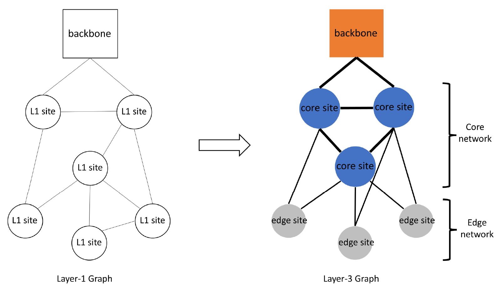
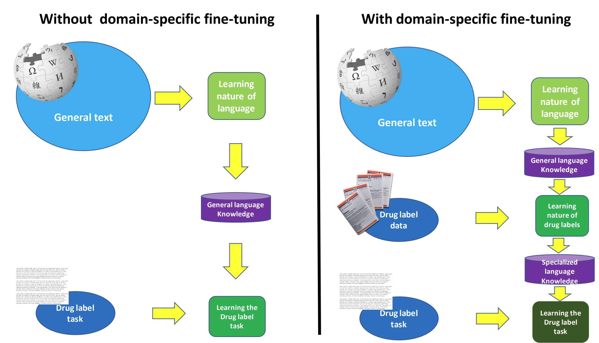
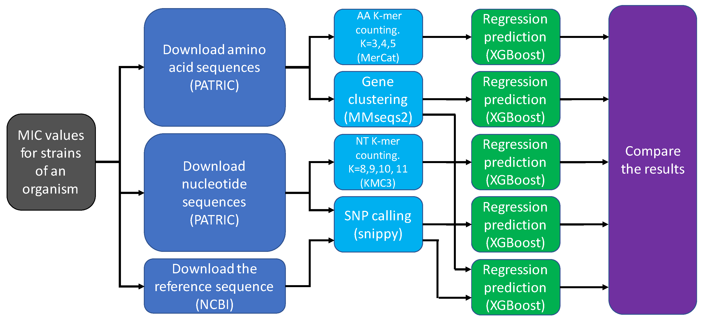
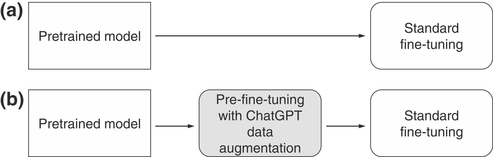
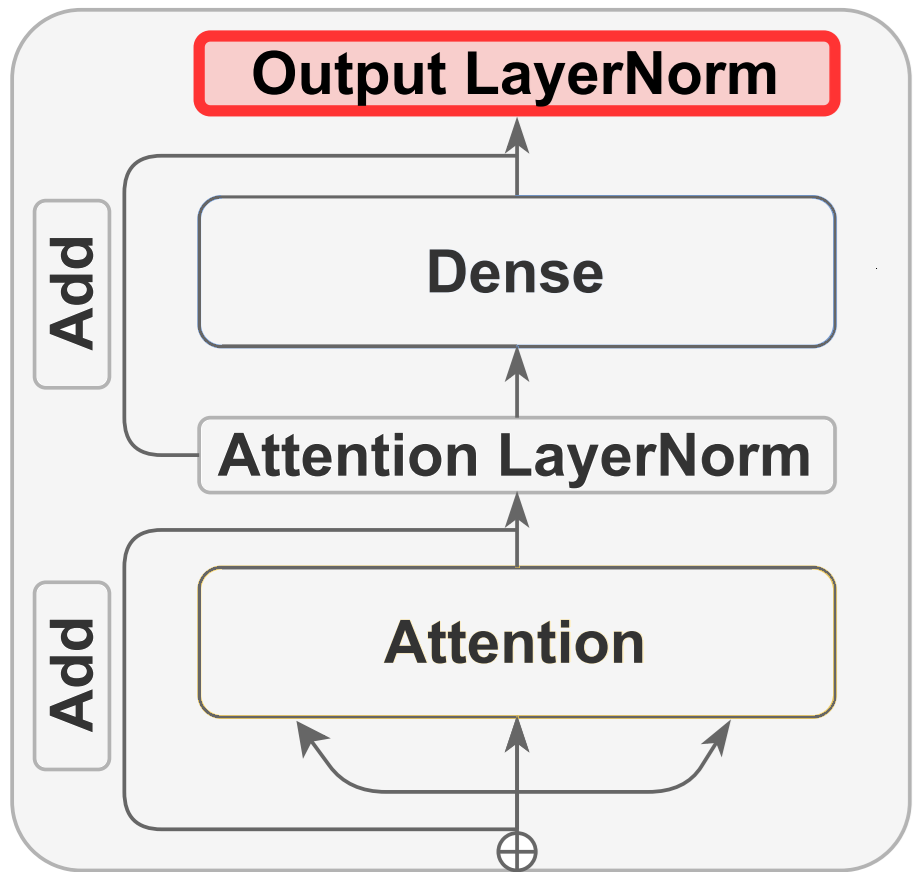
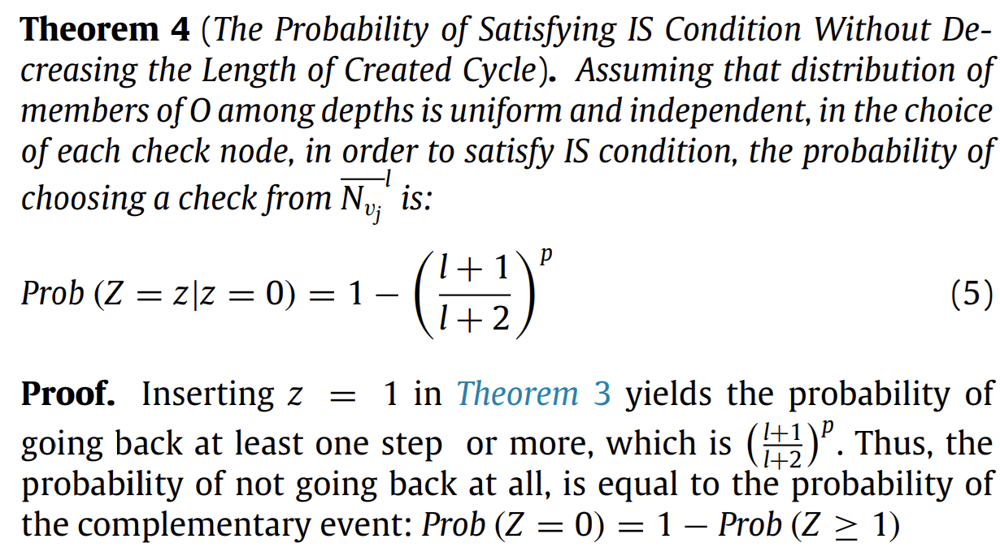

ASCEND: Automated Shockproof Cost-Efficient Network Design
📄 Paper
What happens when a critical connection in a large IP network suddenly fails? A single outage can disconnect customers and disrupt services across an entire region. Building resilience is essential, but adding more infrastructure also increases cost. Can a network be both more resilient and less expensive?
ASCEND tackles this trade-off through a two-level optimization framework. Multi-objective particle swarm optimization explores choices of core sites and circuits, while an integral multi-commodity flow model selects edge circuits and maps connections onto optical paths. Each candidate design is assessed for implementation cost, latency, and vulnerability under probabilistic failure scenarios.

Experiments on multiple real-world networks show that ASCEND can outperform manually engineered designs in both resiliency and implementation cost. The central lesson is encouraging: stronger networks do not necessarily require more expensive networks.
PharmBERT: An LLM for pharmaceutical texts
📄 Paper |
🖼 Poster |
🖥 Presentation |
💻 Code |
📦 Model (cased) |
📦 Model (uncased)
A prescription drug label may look like ordinary text, but its meaning depends on specialized terminology, carefully defined regulatory language, and subtle biomedical relationships. Can a general-purpose language model reliably interpret such a specialized document? Often, the missing ingredient is knowledge of the domain itself.
PharmBERT addresses this challenge by adapting the BERT architecture to pharmaceutical language. Rather than relying exclusively on general-purpose pretraining, the model learns from drug-label text and can then be fine-tuned for downstream natural language processing tasks. The goal is to equip the model with representations better suited to the vocabulary and structure of FDA drug labeling.

The study demonstrates the value of domain-specific pretraining for pharmaceutical text analysis. More effective language representations can support the extraction and interpretation of information from complex drug labels, where precision matters as much as fluency.
Amino Acid k-mer Features for Antimicrobial Resistance Prediction
📄 Paper |
🖼 Poster
Two bacteria may carry genes associated with antibiotic resistance yet respond differently to the same treatment. Simply detecting the presence of a gene does not always tell the whole story. Can patterns within protein sequences help predict how resistant a bacterium actually is?
To investigate this question, I introduced an amino acid k-mer feature-extraction approach that represents bacterial sequences through counts of short, recurring amino acid patterns. These features were used in machine learning models for quantitative antimicrobial resistance prediction and compared with nucleotide k-mers, gene-based approaches, and single-nucleotide polymorphism features.

The approach achieved competitive or improved prediction accuracy while offering insight into the underlying biology. One revealing case involved a truncated version of the tet(D) gene: although associated with resistance in a reference database, Klebsiella pneumoniae strains carrying that version were susceptible. The precise form of a gene can matter as much as its presence.
Two-stage fine-tuning for learning class-imbalanced data
📄 Paper |
🖥 Presentation |
💻 Code
Imagine training a classifier on thousands of examples from one class and only a handful from another. The model may perform well overall while repeatedly missing the rare cases. How can we prevent minority classes from being overlooked during fine-tuning?
I investigated a straightforward answer: two-stage fine-tuning. In the first stage, only the final classification layer of a pretrained model is trained using either class-balanced data augmented with ChatGPT or a class-balanced reweighting strategy. In the second stage, standard fine-tuning adapts the model to the full task. This initial step gives underrepresented classes a better starting point before the full model is updated.

Across the evaluated datasets, two-stage fine-tuning outperformed conventional fine-tuning and competing approaches. The broader idea is simple but powerful: before asking the entire model to learn, make sure its decision layer has had a fair chance to learn the rare classes.
LayerNorm: A key component in parameter-efficient fine-tuning
📄 Paper
🖥 Presentation |
Fine-tuning a large transformer can be effective, but updating millions of parameters for every new task is costly. What if a surprisingly small part of the model carries much of the information needed for adaptation? Layer normalization turns out to be a promising place to look.
I analyzed how different BERT components behave during full fine-tuning and found that LayerNorm exhibited particularly high Fisher information. Guided by this observation, I explored parameter-efficient fine-tuning that updates only LayerNorm parameters. The resulting performance was comparable to bias-only fine-tuning while requiring approximately one-fifth as many trainable parameters.

The finding goes further: strong results were possible even when updating only a subset of LayerNorm parameters. Some useful subsets could be identified using information from other tasks, suggesting that parameter-efficient adaptation need not always depend on the target task. A small component can make a substantial difference.
Mathematical analysis and improvement of IS-LDPC codes
📄 Paper
Orthogonal frequency-division multiplexing (OFDM) is widely used in communications, but its high peak-to-average power ratio (PAPR) creates a practical challenge for transmitters. Invertible-subset low-density parity-check (IS-LDPC) codes can help control signal peaks, yet increasing the number of invertible subsets may weaken error correction. Can we keep the PAPR benefit without sacrificing reliability?
I approached the problem from both mathematical and algorithmic perspectives. First, I proved four theorems characterizing key probabilities and bounds in IS-LDPC code construction. I then used these results to develop a heuristic search method that improves the choice of code structures while preserving favorable PAPR characteristics and low search complexity.

Computer simulations showed lower bit error rates and frame error rates across multiple IS-LDPC configurations. The work illustrates how a theoretical understanding of a coding trade-off can lead to a practical improvement in communication reliability.